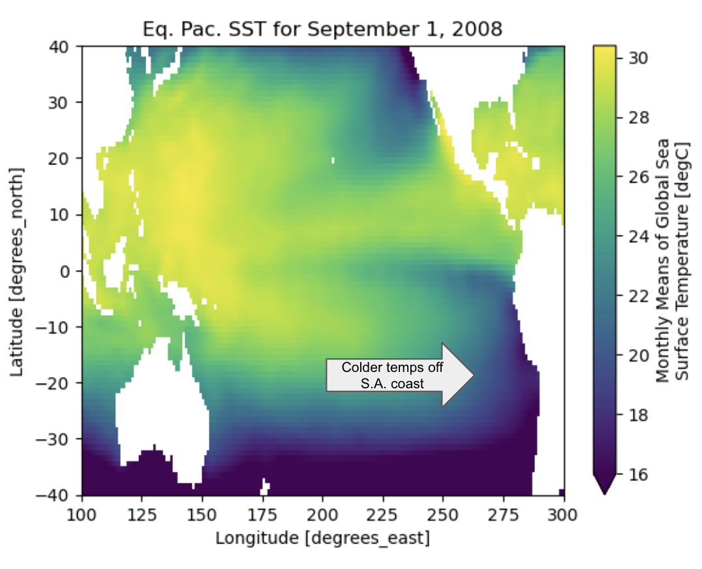
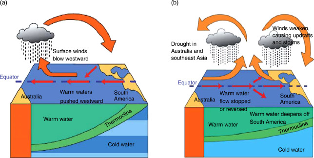
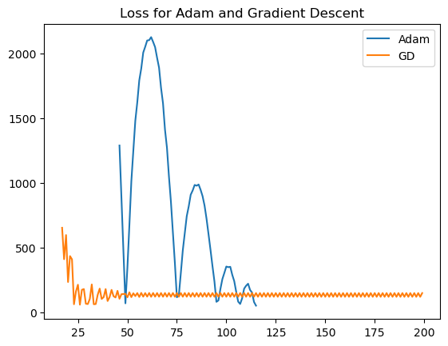
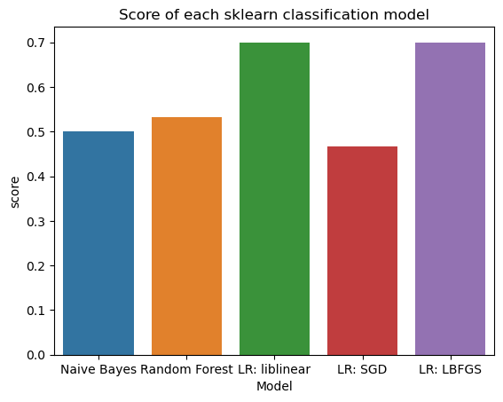
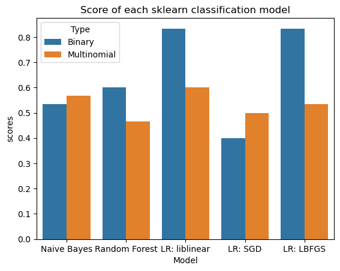

Abstract
Modeling the El Niño Southern Oscillation is a problem that has plagued climate scientists due to the lack of observed data to train models on. This blog post will describe how I attempted to train a Logistic Regression model on observed and reconstructed sea surface temperature data in order to predict ENSO phases. The data processing for this project was what took the most time, and had I been more proficient with using spatiotemporal data, I may have had more time to implement more complex algorithms and find more success. I used sea surface temperature (SST) data from the Pacific Ocean, clipped to exclude extra cold areas and other oceans. I then split that data into regions, which I used as features. In the end, my Logistic Regression models using both Gradient Descent and Adam optimizers ended up achieving 50-60% accuracy on training data. I then input my feature matrix and target vector into five scikit-learn models, which found slightly more success. I then posited on future steps and modeling techniques that could make this project successful in the future.
The source code for this project is located here.
Introduction
The El Niño Southern Oscillation (ENSO) is a climate circulation pattern resulting from temperature dynamics in the Equatorial Pacific Ocean. Colder temperatures along the South American coast indicate a La Niña year, and can cause increased rainfall in areas like India with a pronounced monsoon season. Figure 1 illustrates what the sea surface temperatures can look like in the Pacific when a La Niña phase is happening.

ENSO is a phenomenon that is interconnected with the entire earth system. The figure below from Anderson and Lucas (2008) illustrates some of the Earth System processes that affect and are affected by ENSO. Specifically, it illustrates how wind and precipitation are broadly affected by (and how they affect) the SST in different parts of the Pacific.

In doing this project, I wanted to see if simple Logistic Regression could classify future El Nino stages 6 months in advance based on current sea surface temperature variables. Others have implemented machine learning algorithms to solve this problem with climate model output integration and/or increased features in terms of factors indicating ENSO (SST, sea surface height, precipitation, etc.). Specifically, it is difficult to create a model that doesn’t include any climate modeling because satellite monitoring of Earth only started in the late 1900s (Chen, Gilani, and Harlim (2021)), so there is an extremely limited range of data available to train models on. Most models, even if they don’t use predictive models to directly predict ENSO conditions, will use reconstructed climate from a Global Climate Model in order to expand their dataset. Chen, Gilani, and Harlim (2021) implemented a Bayesian model that avoided the use of modeling that was able to achieve better accuracy than some models that are integrated with climate models. Notably, this model included many more features than we will use in this implementation. Hernández, Mesa, and Lall (2020) were also able to successfully predict ENSO using a non-homogenous Hidden Markov Model. After learning about HMMs in AI, this implementation makes a lot of sense based on how climate proxies are also, in a way, indicators of hidden states. In this blog post, I will describe how I attempted to implement a Logistic Regression model able to predict ENSO stages with reduced features from other implementations.
Values Statement
The potential users of this project, had it been more successful, would have been policymakers and communities who are generally more affected by El Nino/La Nina conditions. Additionally, scientists could use this model and improve it using climate modeling. Other than these users, people who could be affected by this project include people who live in areas that are heavily impacted by these events–a wrong prediction could be hazardous if communities prepare in one way and are unprepared for another. I think these are the same people who would benefit from this technology. Additionally, it would in theory be less computationally expensive than implementing a climate model and using those results to inform predictions, so it would have been helpful to scientists and others implementing climate prediction models had it worked. People who could be harmed include the previously mentioned groups since a wrong prediction could be detrimental to communities preparing for one outcome and getting another.
I wanted to work on this problem because, after reading about ENSO and learning about it in classes, I was interested to see if sea surface temperature (SST) alone (initially, along with precipitation) could predict future stages. I had learned a lot about climate modeling in some of my Earth and Climate Science classes, and wanted to see if I could implement algorithms from this class to predict ENSO events. I also just wanted to combine my ECSC knowledge with a project for CS!
I do not think the world will be a necessarily more or less equitable, just, joyful, or sustainable place because of what I implented, mainly because it was not very successful in terms of what I was able to produce. I think that the main effect this technology will have will be on me, simply because now I know firsthand how it is very difficult to predict weather patterns, even well-defined ones.
Materials and Methods
Data
For the SST data, I used the Japan Meteorological Associaation’s COBE-SST 2 dataset (Japanese Meteorological Association (2025)). COBE-SST 2 and Sea Ice data was provided by the NOAA PSL, Boulder, Colorado, USA, from their website at https://psl.noaa.gov. This dataset goes back to 1850, but I had to subset this data to only include years after 1950. This was necessary in order to match the range of the feature matrix with the data I used for the target vector. Much of this data has been filled in/reconstructed in order to account for the lack of data before the late 1900s. The target data was derived from the Oceanic Nino Index (ONI) dataset, sourced from the National Weather Service Climate Prediction Center (2013). The ONI goes back to 1950, and represents an ocean-wide anomaly (or change from the normal). An ONI of < -0.5 indicates a La Nina phase, whereas an ONI of > 0.5 indicates an El Nino phase. Each row in my dataset represents the yearly SST average. The columns of my feature matrix are all regions of the ocean. There is no precipitation data included in this dataset, which I will explain in the following section.
Approach
The first thing I did in order to process this data was to clip it to only include data from the Pacific Ocean. I also clipped out the ocean closest to the North and South Poles because their temperature is always hovering around 32 degrees Fahrenheit regardless of the ENSO phase, and ENSO is mainly affected by just the Equatorial Pacific.
I went through this data and turned it into first ternary data and then binary. This was because I did not have time to implement a multinomial optimizer. In the end, I classified years where the ONI was < 0 as La Nina, and years where the ONI was > 0 as El Nino. This simplification certainly could have caused issues, but when I ran an sklearn model on each of them, I found that the target vector with three classes actually resulted in worse accuracy (probably because I didn’t have enough data points). I used all the regions/features as predictors, which also could have affected accuracy (again, because of the small amount of data points I had.)
In the time given to work on the project I couldn’t figure out how to deal with both spatial and temporal data without making the spatial aspect the features. With this structure of the feature matrix, I couldn’t figure out how to add precipitation without changing the whole structure of the data. This means that the only climate data I could use as a feature was SST. I came into this project also wanting to include precipitation, but did not end up getting there with this project.
When I realized how much trouble the data was giving me, I pivoted to just trying to classify current ENSO states, which proved harder than I expected. To do this I used Logistic Regression with Gradient Descent Optimizer and Adam Optimizer. I wasn’t able to get them to reach good accuracy on the training data, so I then pivoted to testing other sklearn models. I created a 60/40 train-test split before running the sklearn implementations of Logistic Regression with LBFGS, liblinear, and Stochastic Gradient descent optimizers. I then ran the sklearn implementations of Naive Bayes and Random Forest classifiers. I evaluated their performance by their accuracy and whether or not they just predicted all 1s or all 0s.
Results
When I ran the models that I implemented myself, I couldn’t get them to predict anything other than all 1s or all 0s. Depending on the train-test split, sometimes Adam would predict mostly 1s and a few 0s or mostly 0s and a few 1s, but it didn’t affect the accuracy. The accuracy on the training data for both hovered around 50%, which makes sense when you consider how they were only predicting one class for the whole dataset. The loss plots for both of them looked odd, and although Gradient Descent appeared to converge, it converged to a low accuracy.

After wrestling with the handmade models, trying to get them to work and failing, I decided to check the sklearn implementations of a few different models to see how they fared. Below are the results of the end accuracy for five different models for one of the runs. Most of the models hover around 50% accuracy, just as our handmade models did. Logistic Regression actually performed the best and most consistently, generally producing accuracies of about 70%-80% with the liblinear and LBFGS optimizers. Occasionally, Naive Bayes would also perform well, but it was more unreliable than the LR implementations.

I also tested the sklearn models on my data with multinomial classifiers (La Niña, El Niño, or Neutral phases). Interestingly, many of the models generally performed worse when trying to classify the data this way.

Multinomial classification performed slightly better for the Bayes model and the SGD model on this run, but it is very close for the Bayes. In many other runs, Binary performed better for Bayes as well, and the only model that consistently performed better with the multinomial data was Stochastic Gradient Descent (SGD). This model also consistently performed the worst of all the models, regardless of target vector.
Discussion
The results of this project clearly do not show much success–I wasn’t able to achieve any more than 55% accuracy with the algorithms I implemented, and even most of scikit-learn’s algorithms didn’t have great accuracy. liblinear and LBFGS were two Logistic Regression optimizers that performed very well (70%-80% accuracy), so if I had more time on this project, I would have attempted to implement them. However, the greater question is whether or not this approach was the right one at all. First of all, I used binary classification, which is not accurate to the actual phases, and necessarily classifies neutral phases as El Niño or La Niña. As we saw from the scikit-learn models, implementing multinomial classification probably would have harmed my models’ accuracy. This likely occurred because I didn’t have enough data points. Also, many previous studies attempting to implement machine learning to predict ENSO have done so by combining with predictive climate model output. When I started this project, I was curious if it would be possible to implement a predictor without doing so. Although people have implemented machine learning algorithms that predict ENSO without using future climate model predictions, these algorithms all used many more features than I included. Additionally, I went into this with very little experience doing machine learning with data that was both spatial and temporal, and so my solution to this problem (to assign regions within the Equatorial Pacific and use those regions as features) was maybe not the best approach either. Given that researchers such as Chen, Gilani, and Harlim (2021), Hernández, Mesa, and Lall (2020), and Pal et al. (2020) have been able to achieve very good accuracy with their models, and experts in the field can predict stages without the help of machine learning, I am certain that the general idea of this project has a future in the machine learning and climate science communities. However, the way I went about implementing my algorithm was not the optimal one. Future implementations should either integrate with climate models or include more features to account for the interconnectedness of the climate system. As the climate warms, integration with models may become more necessary because our understanding of ENSO could shift with a warming climate and more intense phases.
Group Contribution
Because I was working on this project alone, I worked on all parts of the source code and completed all the work related to this project.
Personal Reflection
One thing I learned from the process of creating this project is that things that seem simple can often be quite complicated. I really struggled with the data wrangling–since I had experience using other peoples’ climate models, I assumed that working with spatial data would be fine. However, the combination of spatial and temporal data ended up throwing me for a loop. I think the solution I came up with was reasonable, but it was definitely a “make-do” kind of situation. Additionally, I learned a lot from reading papers about ENSO and how connected it is to the entire Earth system. I had an idea of this from previous classes, but it was cool to be able to read scientific papers on it and see how predictions are made.
Unfortunately, I did not meet my goal for this project. I thought that a good backup would be to try and classify current ENSO stages instead of predicting them, but I also did not obtain good accuracy for this. However, I do think that I learned a lot about why what I was going to attempt wouldn’t work, and why climate modeling is likely needed in order to confidently predict future atmospheric circulation. Additionally, when I undertook this project, I was aiming for accuracy of 50% or more–which I did obtain. Unfortunately, that accuracy is not enough to be useful in its function as a predictor.
I had to do a lot of pivoting in this project, and I think that in the future, I will take the flexibility that I gained here and put it to use. It was good practice in scaling down my expectations in the moment and working with what I had. This will be useful in all aspects of my future life, including personal, professional, and any academic work I may continue doing in the future.